Amazan Dataset Predictions and Improving Customer Service Through Suggestions
| **Engineer** | **School** | **Area of Interest** | **Grade** |
|:--:|:--:|:--:|:--:|
| Ayush C | Mountain House High School | Mechatronic Engineering | Senior
Introduction
“Machine intelligence is the last invention that humanity will ever need to make.” This concept known as Artificial Intelligence uses human aspects like machine learning, speech recognition, and visual perception to accelerate the progress of this world. To give an insight into machine learning, the best and optimal models are being created to shape the patterns and trends of datasets. Most datasets have a lot of outliers and raw data, but they also contain data with the potential of having meaningful insights. In order to extract meaningful insights, it is very important to fit the model correctly without underfitting or overfitting the dataset.
Some models can have flaws of either underfitting or overfitting the data, therefore not generalizing patterns in the data leading to bias in the model. Overfitting is a common pitfall in deep learning algorithms, in which a model tries to fit the training data entirely and ends up memorizing the data patterns and the noise/random fluctuations. An overfitting-model can work or perform extremely and as close as to a 100%-accuracy. This indicates that this model trains way too much with one dataset and memorizes all of the features of that particular dataset, leading to the model’s massive inefficiency with other varieties of different datasets. On the other hand, underfitting is another common pitfall in machine learning by being unable to map between the input and the target variable. Under-observing the features leads to a higher error in the training and unseen data samples. It is different from overfitting, where the model performs well in the training set but fails to generalize the learning to the testing set ( Baheti). In this case, an underfitting-data model is very simple and is unable to create a relationship between the input and output variables by under-observing any trends and patterns leading to a high error while training the data.

As shown in the image above, an overfitted model seems to be close to perfect in accuracy rate as the model over-observes and memorizes every feature in the dataset making it a bad model to generalize other datasets. Under Fitted models cannot exactly fit the data under the line and are unable to create a strong relationship to separate the data values. In this case, a linear model is a good example of an underfitting model as it fails to create a strong predictive model. A good fitting model that can generalize every dataset consistently well without any bias is shown as it nicely draws a relationship for regression purposes (Baheti).
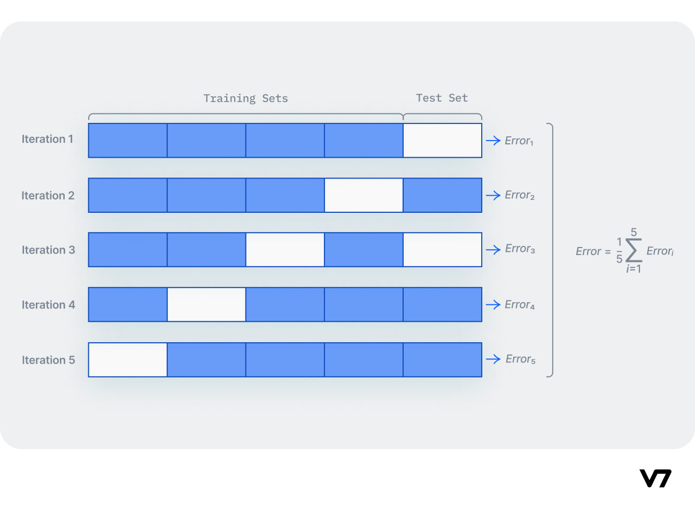
K-fold cross-validation is a technique in machine learning to test the accuracy of the model and prevent overfitting. Cross validation splits a dataset into K separate chunks, and then prediction is performed via leave-one-out. Essentially, we will take 1 chunk of data for testing and the remaining K-1 chunks of data for training. We will repeat this K number of times to get an overall idea of how our model performs (Baheti).
# Labeled Vs Unlabeled Data
On the other hand, it is also important to know and recognize another machine learning method that deals with unlabeled data. Some examples include images, audio recordings, and medical scan reports. If the data has no labels, how is it possible to fit an algorithm or a model onto the dataset? As we saw before, models are optimized to reduce error given a label. It is very much possible to do this task with the help of a method called unsupervised learning. Unsupervised learning uses machine learning algorithms to analyze and cluster unlabeled datasets. The purpose of this model is to discover any hidden trends or patterns, mainly similarities and differences among the dataset through clustering methods. Grouping the datasets into different clusters based on similar features can be done in a variety of methods. One way to use unsupervised learning is KMeans that separates a dataset into k clusters based on k centroids of data. The algorithm measures the average distance of every point from the centroids and groups the points closest to each centroid creating k clusters.
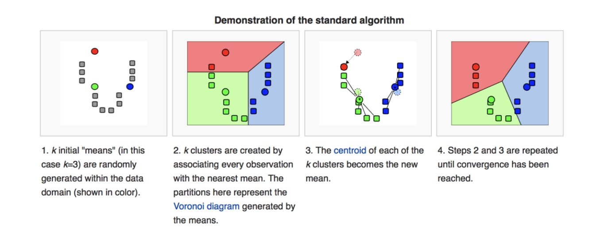
Before we go onto testing an algorithm with a dataset, it is vital to know some data structures to use in python. The three most important libraries in python to use are Numpy's, Pandas, SciKit Learn, and Matplotlib. Matplotlib is a plotting library from Python to create visual representations of data sets in varieties of ways and structures. Pandas is a software library from Python used for the manipulation and arrangement of numerical data. Numpy is an open-source library from Python to generate multi-dimensional arrays and data structures.
# Testing Models on California Housing & FIFA 2023 Cards Datasets
I initially trained some models on dataframes of California housing prices. I tried the model of linear regression by using mean squared error between the housing values predicted by the regression line and the actual and observed housing values. First, my mentor and I made a regression line between x and y variables. We decided to make every feature (longitude, latitude, housing median age, total number of rooms, total number of bedrooms, population, households, and median income) the explanatory or independent variable while we made the median house value the response variable. From the regression line, we can understand the relationship between the changes in the x variables and the changes in housing values. We first made individual arrays for the x and y variables, and we made a function to estimate the coefficient of slope and the y-intercept for the regression line.
Link for FIFA 2023 Cards Code: https://www.kaggle.com/ayushch05/fifa-2023-code
Then we went on to train and test models on another database called FIFA2023 card ratings for each individual player. I wanted to find patterns and relationships between physical and technical attributes (dribbling, pace, power, shooting power) and the player’s individual rating. For this starting experiment, I decided to make the physical and technical attributes as the x and explanatory variable and the player ratings as the y. I also have a CSV file of all fifa player ratings, and I converted all the files into a labeled data table using the library pandas as pd to read the CSV file. Before training the models, I needed to define x and y-variables for my dataset. In this case, if I want to predict the rating of any fifa player when training the model, then I made pace, shooting, dribbling, passing, defending, and physical as my x variables to predict the players’ ratings as a the y. Because of this, I defined an array labeled x to locate any data for those attributes for any player in the x-labeled array. I made the array the fifa rating depending on the player.
- 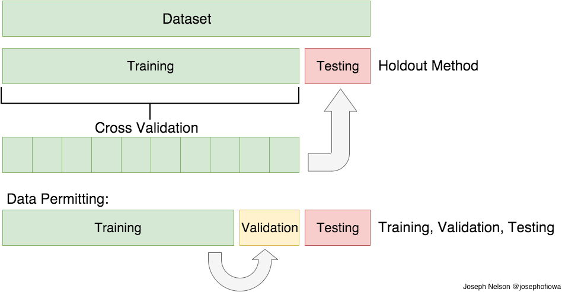
Like every model, I first train a portion of the data to see how well the model can fit that section of data and then seek validation from the results after training a model. After I train, I finally decide to test the same model on the remaining portion of the data. In this case, I split the quantitative data for FIFA cards into 80% for training the data and 20% for testing the data. This means that I kept a separate list of x data to train (x_train) and x data to test (x_test).
In this case, since I was trying to make predictions for fifa ratings, I used the linear regression model to report the slope coefficient and the y-intercept of the regression line between the x and y data without considering the tested and trained data ( I would need this for later models). Later, I would implement K Nearest Neighbors for regression purposes. Before I explain the purpose of implementing this model, it is important to understand this supervised machine learning model. The k-nearest neighbors algorithm, also known as KNN or k-NN, is a non-parametric, supervised learning classifier, which uses proximity to make classifications or predictions about the grouping of an individual data point (“K-Nearest Neighbors Algorithm”). In general the KNN model uses an individual data point to find the k nearest points using euclidean distances of the x and y values. For regression, the KNN model memorizes the euclidean distances around the specific x data point on the cartesian plane and analyzes the average of the k nearest neighbors. This is used to make a prediction about the classification of the neighbors, and therefore K Nearest Neighbors uses the classification’s observations to come up with the best model between the x and y values.
- 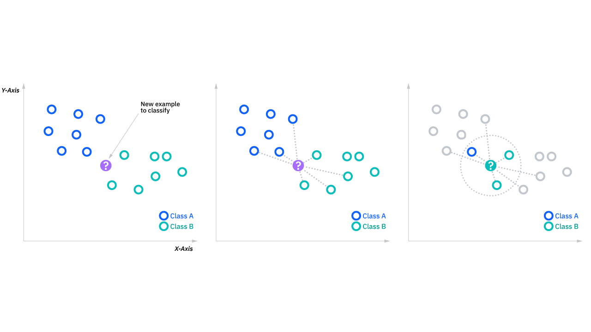
# (“K-Nearest Neighbors Algorithm”)
Similarly with the FIFA cards, I used this model to fit my training data to come up with a general model. I used the KNN to fit this model between x_train and y_train. After fitting the model with the training data, I tested the same exact model to predict the y values for the x testing values. In order to check for the accuracy of the model, I computed the mean squared error loss between y_pred ( values predicted by x_test) and y_train. I found the mean-squared error to be 3.23 showing the model works very well. In this case, we implemented a KNN model with 50 neighbors. Can a model with a different number of neighbors work better? In order to find out the optimal number of neighbors, I ran a for-loop with an increment i value from 2 to 32. The i value represented the number of neighbors the knn model would use to fit the data. Using this, we tried to find the best model with the smallest mean-squared error between y_test and y_train.
After implementing the KNearest Neighbors to predict players’ ratings, I wanted to try Support Vector Machines. What are Support Vector Machines and why is it important to use? RBF is a support vector machine model. Support vector machines (SVMs) are a set of supervised learning methods used for classification, regression and outlier detection (“What is a Support Vector Machine ?”). SVM models’ objective is to find the finest line or decision boundary that can separate n-dimensional space into classes such that one can put the new data points in the right class in the future. “This decision boundary is called a hyperplane. In most of the cases, SVMs have a cut above precision than Decision Trees, KNNs, Naive Bayes Classifiers, logistic regressions, etc ” (“What is a Support Vector Machine ?”).
In the image of SVM models shown below, each SVM model fits the relationship between sepal width as y and sepal length as x differently. RBF is a SVM that can fit both non-linear and linear problems, and RBF has strong hyperparameters to fit the model. I decided to implement the RBF Kernel function out of all the SVM models. Using the model I trained, tested models, predicted output values, and found mean-squared errors between the trained and tested output values.
- 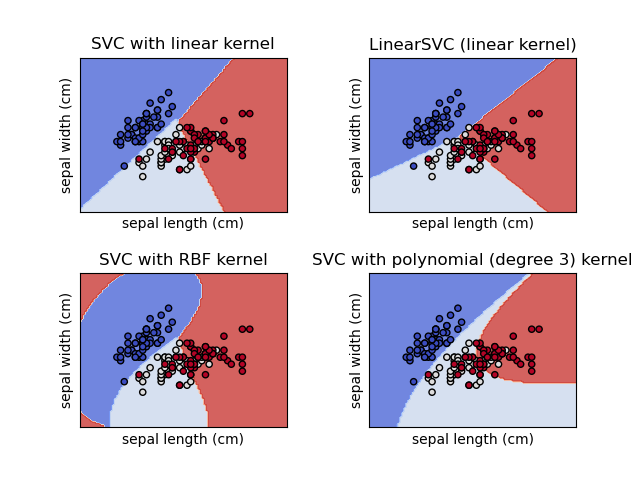
#Amazon Customer Reviews Dataset
After experimenting with small data sets, I wanted to conduct predictive analysis on a very large real-life categorical data set, so I chose to study Amazon customers reviews on customer service. I have been working on a program to cluster and classify the Amazon Customer reviews Dataset. My end product is to identify a better way to present visuals and observation of trends of Amazon customer reviews and suggest service improvements with valid proof. We have currently selected a Dataset that will allow us to explore how to use different ML models to try to solve the problem. In our case, we have a dataset of the value of consumer behavior and answers from a survey about Amazon service. This will give me an opportunity to learn how to manage different data types and encode categorical data in a way SciKit Learn expects. The next step will be to see what model works by quickly testing and tuning things like Linear Regression, Support Vector Machines, and Random Forest. We will also be exploring methods to avoid overfitting and good practices for data science! From this, we will be training and testing data of consumer behavior to predict customer ratings of Amazon service through regression models. After this, we will be suggesting improvements to make service better from patterns of customer behavior.
In order to test our purpose with the Amazon Customer Reviews, we implemented regression and classification models, but our dataset contained all categorical data. Regression and classification models need to work with quantitative data to best model the data. I used label-text encoding to convert the text/string data into integers using the LabelEncoder() function as a minor fix to this problem.
Our overall purpose in this dataset was to find and understand patterns from the reviews, so classification seemed the best way to go. I wanted to find the relationship between the customer behavior and satisfaction ratings. One constraint of the customer reviews data was that there were many factors, columns, and review types like “improvement areas”, “shopping satisfaction”, “rating accuracy”, “product search method”, and “review reliability”. Because the data contained so many factors and variables , TSNE was the best plotting algorithm in order to visualize the data. What is TSNE? TSNE stands for t-distributed Stochastic Neighbor Embedding. “t-SNE is something called nonlinear dimensionality reduction. What that means is this algorithm allows us to separate data that cannot be separated by any straight line, ” (“t-SNE clearly explained”). Some examples of data include:
- 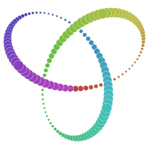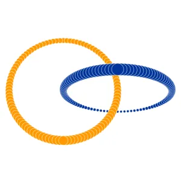
TSNE algorithms can help break down complex data (images and audio recordings) by projecting or visualizing the data into lower-dimensional space. This makes it easier to visualize data with many dimensions and retain the overall variance of the data. Before testing models, we used TSNE to make many graphs with different x and y variables. In the Amazon Dataset, there are 23 columns (factors). For each graph, I decided to have one y variable and 22 other variables as x variables to find the relationship between every other factor and one review describing the satisfaction with a feature of the customer service. I was able to plot these different combinations of plots of different y variables. These are my T SNE plots with different y variables:
- Service Apperance
- 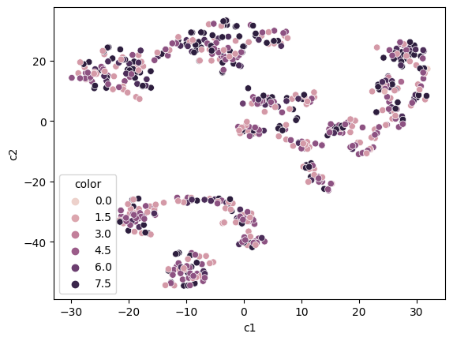
- Shopping Satisfaction
- 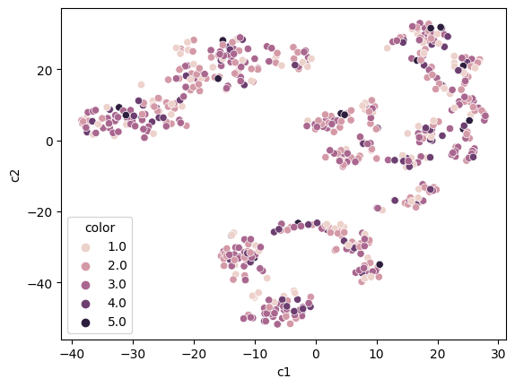
- Rating Acurracy
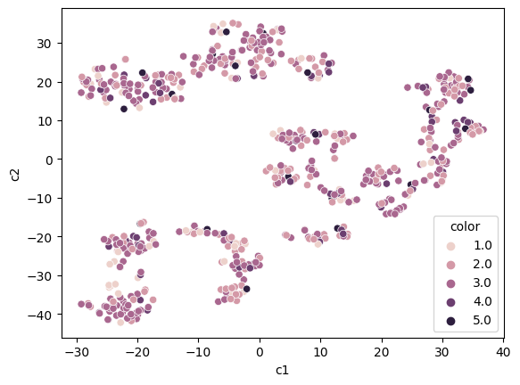
- Improvement Area
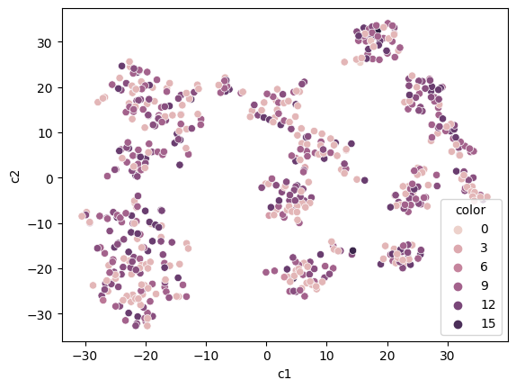
- All 23 fields together with no x and y variables and perplexity: 50
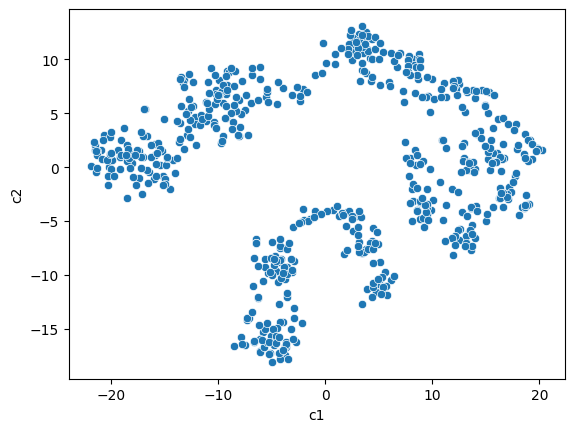
To give some brief context, perplexity is a hyperparameter of TSNE, and perplexity describes the balance between how local or global clusters of data can be. If the perplexity of the dataset is higher, the data is observed as more local, meaning there are less clusters. If the perplexity is lower, the data is observed as more local meaning a visual of more clusters. After visualizing the data, this is where I started testing and training models on the dataset to look for patterns, trends, and relationships. The first model I tried was KMeans to find clusters of data based on the average distances around the centers of each cluster.
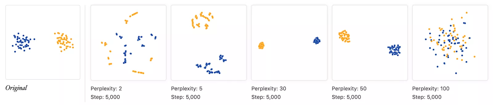
The next question is how do I find the optimal number of clusters to best represent the data and to compare the clusters. Down below in an elbow plot that has the number of clusters as the x and average distance of points as y. The elbow point is the point where the number of clusters doesn’t make a difference in the average distance of the points. After 6 clusters in the graph, the average distance of points within the clusters doesn't change, so we went with 6 clusters in our k means model.
Elbow Plot: Standard Deviation (y) VS Number of Clusters (x)
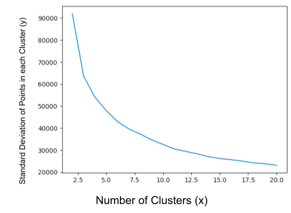
We used the KMeans model with 6 clusters to plot this TSNE graph of the amazon customer reviews dataset.
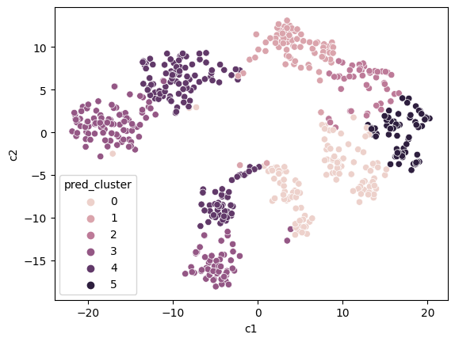
How do I find patterns in the dataset among different clusters? Using boxplots, I studied the differences in each variable among the different labeled clusters.
Distribution in of Rating Accuracy in Clusters (0-5)
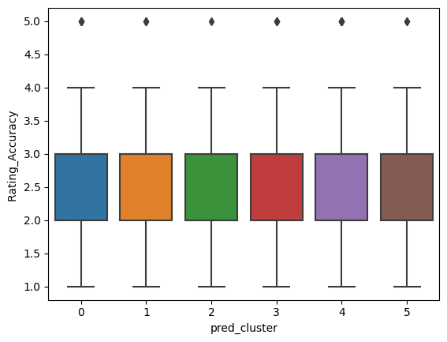
Distribution of Cart Completion Frequency in Clusters (0-5)
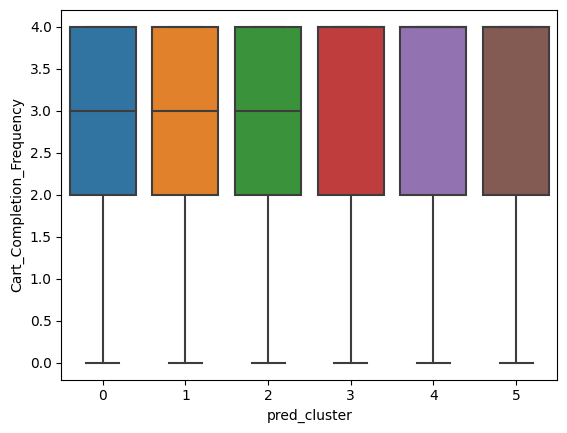
Distribution of Service Appreciation Ratings in Clusters (0-5)

Distributions of Shopping Satisfaction Ratings in Clusters (0-5)
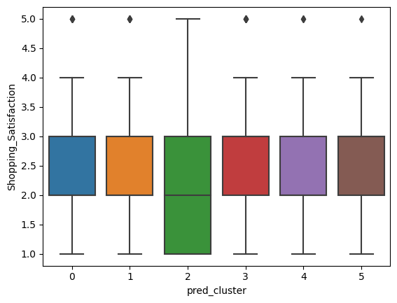
As shown in different boxplots, there are no specific patterns or no conclusions can be drawn about clusters. From KMeans, we cannot tell or depict any relationships between the customer service and customer satisfaction. Due to this problem, I implemented another unsupervised model: DBSCAN. What is DBSCAN? “DBSCAN is a density-based clustering algorithm that works on the assumption that clusters are dense regions in space separated by regions of lower density. It groups 'densely grouped' data points into a single cluster” (Sharma). Unlike KMeans, DBSCAN can handle clusters of different sizes and is resistant to outliers or any noises in the dataset. KMeans is useful when there are clear medians or means as centroids or any center of measures to make clusters around. DBSCAN has 2 hyperparameters that can be tuned to fit a model. One parameter is epsilon. Epsilon is the radius of the circle to be created around each data point to form sample circles. Another parameter is called minPoints, which is the minimum number of data points required inside that circle for that data point to be classified as a Core point. Do not confuse the sample with a cluster. There consists a number of minPoints around the core point within the radius or epsilon of the sample circle. This sample is classified as core point. If the sample has less than minPoints, then it is classified as a Border point. If there are no data points to form around the epsilon (eps for short form), it is considered as a noise point, indicating that data point is an outlier.
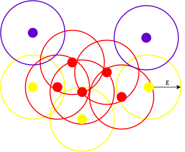
This image above shows circles constructed with a specific radius around individual data points. That radius is labeled ɛ. Around each point, the algorithm considered any nearby points within the epsilon of the circle. If there are a minPoint number of points around the data point, that data point is considered a core point. This is a requirement as a minPoint number of points makes one sample. In this case, minPoints = 3. In this case, “all the data points with less than 3 but greater than 1 point in the circle including itself are considered as Border points. They are represented by yellow. Finally, data points with no point other than itself present inside the circle are considered as Noise represented by the purple color” (Sharma).
I implemented the DBSCAN algorithm. Before implementing the model, I had to choose optimal values for the parameters. To do this, I made separate lists of eps values (0 to 20) and minPoint values (0 to 20 points). I ran a for loop to run a model with different parameter values. Looking at the different models, I picked the model that had the most dense and distinguishable clusters. Therefore, I picked my 7.5 as final my eps value and 13 as the final minPoints value.
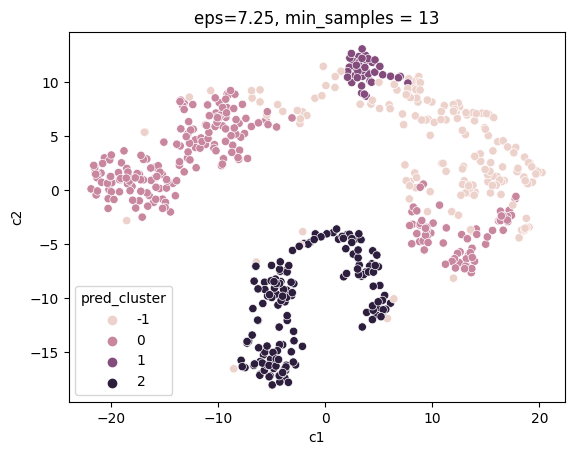
This model shows the dataset being split into 4 clusters labeled -1, 0, 1, and 2. After this, I used matplotlib and TSNE to print boxplots for different categories. Here are the boxplots:
Distribution of Review_Helpfulness Ratings in Clusters (-1 to 2)
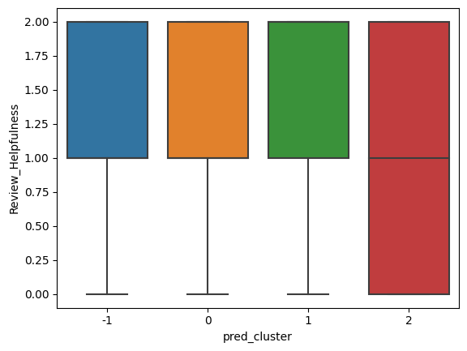
Distribution of Cart_Completion_Frequency Ratings in Clusters (-1 to 2)
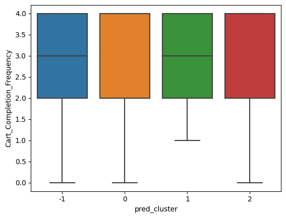
Distribution of Search_Result_Exploration Ratings in Clusters (-1 to 2)
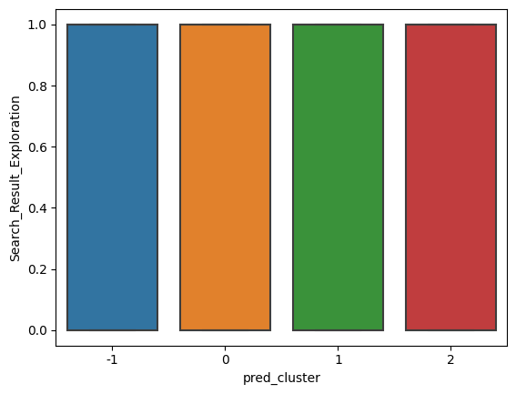
Distribution of Improvement_Areas Ratings in Clusters (-1 to 2)
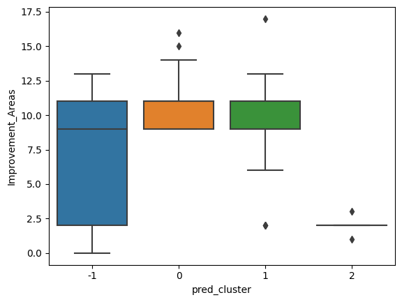
As shown in the box plots, there are distinct differences in the distributions of each cluster unlike in the boxplots done under the KMeans model. For instance, the distribution of improvement area ratings is different. In the pred cluster labeled -1, there is a greater range of ratings than in the pred cluster labeled 0. Pred clusters 0, 1, and 2 have outliers unlike the cluster labeled -1. In the boxplot for the distribution of search result exploration, all distributions and their characteristics (median, range, maximum, and minimum) are the same.
Link to my code for Amazon Customer Reviews Dataset:
https://colab.research.google.com/drive/1G8RXqerLc20WHeyZpqKfYl8Gp5eZJtJ0?usp=sharing
The purpose of this research was to identify effective strategies for analyzing the Amazon Customer Review Dataset and there are many different data analysis techniques that can be used. Our data is mainly categorical, meaning, the “Euclidean Distance” that KMeans and DBSCAN uses doesn't mean anything. If we have categories labeled 1-5, the distance between categories doesn't matter because the number we assign each category is arbitrary. Unless our categories have scale (sad, whatever, happy) we cannot use this. From KMeans and DBSCAN, differences and patterns couldn’t be found in the box plots for each pred cluster as well. Based on the analysis conveyed, it can be concluded that KModes was the best machine learning algorithm used to analyze and fit the categorical data because KModes can analyze the most frequent classification patterns in each pred cluster to predict trends between customer behavior and customer satisfaction. Future exploration on the behavior of the dataset could be useful to finding further algorithms to suggest improvements of the customer service by exploring deeper into machine learning.